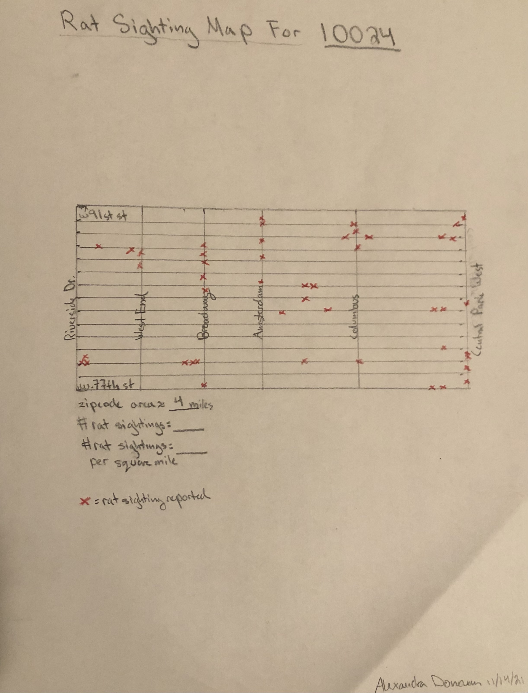
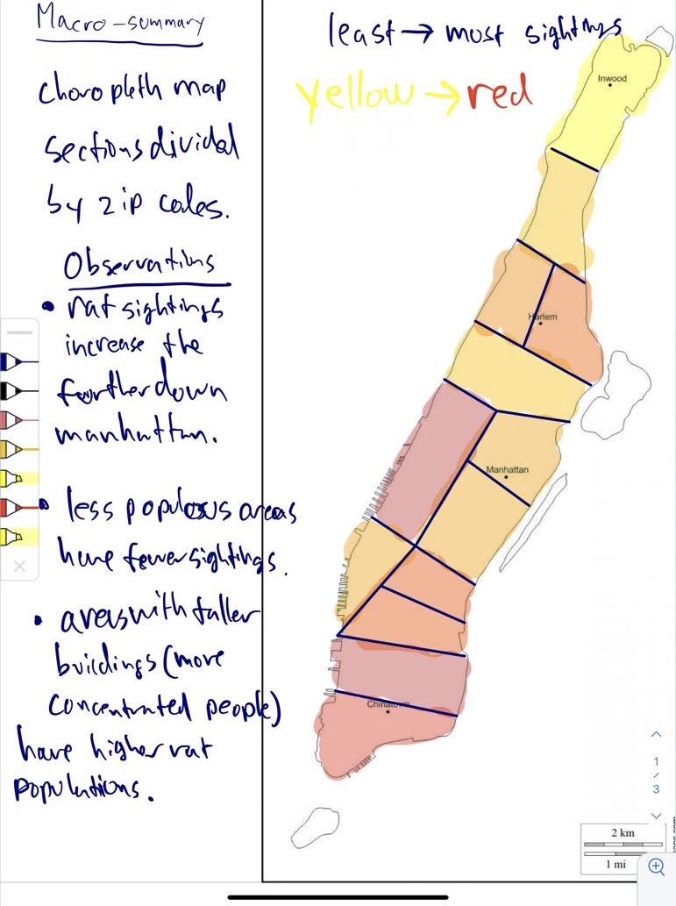
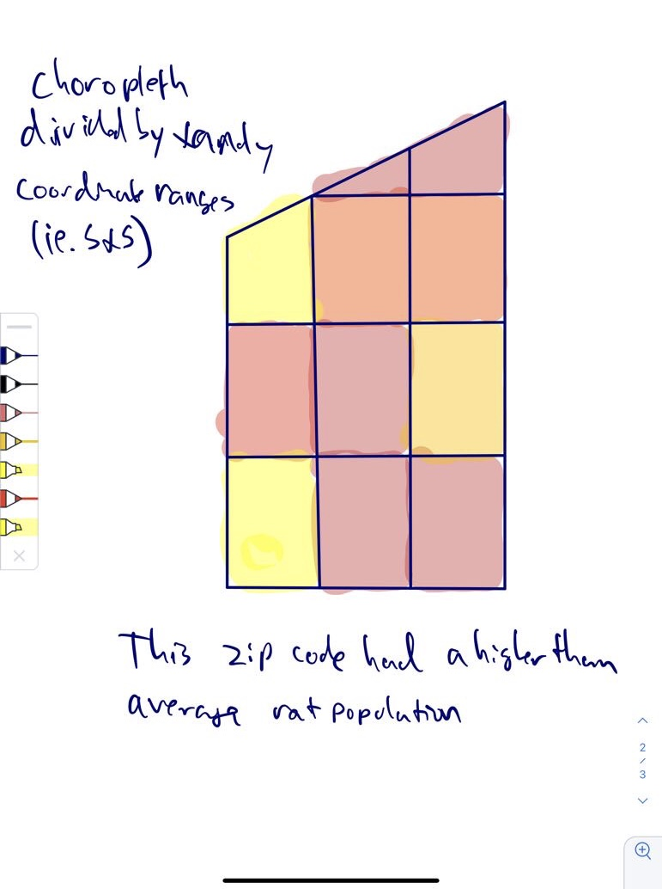

Understandability: The macro-summary shows a map of all of Manhattan divided by zip code, making it easy for users to build a complete conceptual model of the data. Additionally the color-coding system is consistent throughout which allows for visibility and a sense of structure.
Achievability: The macro-summary is achievable because it draws from existing zip code maps of Manhattan and implements our color coding system according to how many rat sightings are reported per square mile in the dataset.
Signifiers: The macro-summary makes use of signifiers in that when a user hovers over a zip code they see the total number of rat sightings reported in the zip code and are prompted to “click for more info”.
Iterability: The macro-summary allows for future iterations of the site because new data can be input and the colors on the map will update accordingly.
Privacy: The macro-summary does not ask for or expose user information or personal information pertaining to the data it uses. User data will not be used or stored.
Micro-Summary Sketch

Understandability: The micro-summary shows each rat sighting as an ‘x’ at the coordinates where it was reported. However, due to the quantity of data that we’re working with, the micro-summary would not have been very understandable or easy to read.
Achievability: The micro-summary is achievable as it would just involve plotting each data point on the map (likely utilizing for loops).
Signifiers: The micro-summary involves a key that describes what the red x’s represent and provides additional information on the zip code.
Flexibility: The micro-summary can be generated for any zip code and within the micro-summaries, users can focus on specific streets or avenues.
Ease: While the micro-summary in theory would be usable with ease as it involves no user-interaction, the large quantity of data might make it in actuality overwhelming and stressful to read.
Ishan's Sketches
Macro-Summary Sketch

Understandability: Understandability: The map would be easy to interpret, as a color key would be provided that illustrates rat population, so that the user can understand geographic trends in rat population.
Achievability: This map is achievable because the zip codes of rat sightings are accessible, and we have the resources to make a color-coded choropleth map.
Mapping: The macro-summary zip codes are colored based on the concentration of rats rather than the total number, to provide a better idea of “rat-heavy” areas.
Ease: The macro-summary would be easy to use as it wouldn’t require any interaction to view the map. Simply hovering over a zip code would provide basic information.
Comfort: The map will be displayed so that the user can see all of manhattan. It is divided into zip codes, which are appropriately sized divisions to show variation in data, while still being easily visible to the user.
Micro-Summary Sketch

Understandability: This map is understandable as it would be a choropleth that illustrates rat population in set latitude/longitude ranges (essentially dividing a zip code into many squares. These squares would be color coded, showing trends in rat population within each zip code.
Achievability: This would be achievable as it would involve a similar data grouping process as in the macro-summary. Instead of grouping by zip code, it would be grouped by a coordinate range.
Iterability: There could be many more iterations created with adjusted data and coordinate ranges.
Privacy: No specific locations of sightings are provided, and street addresses are not used as part of the data.
Flexibility: Users can view the micro-summary of any zip code they want.
Final Design
Our sketches for the macro-map turned out to be nearly identical so our final design will look pretty similar to the sketches. We plan on creating a color-coded zip code map of Manhattan with each color corresponding to a specific range of rat sightings per square mile. The colors will range from green to red
(as shown in the key on Alexandra's macro sketch). Green will be the lowest number of rat sightings per square mile (anything below a certain threshold) and red will be the highest number of rat sightings per square mile (anything above a certain threshold). The color-coding system serves to increase
understandability and allow for ease and comfort while reading the map. On the page of the macro map, users will see text signifying that they can hover over a specific zip code to see a brief summary of the data for that area. When they hover over the zip code, they will additionally see text prompting
them to click on the zip code area for more info. This will lead them to a micro summary of the chosen zip code. Our micro summary design will look more like Ishan's sketch. The micro summary will be a map of just the designated zip code area, divided into equal sections. Each section will be color coded
(similarly to the macro map) with green indicating the lowest number of rat sightings per section and red indicating the highest. A key on the micro summary page will specify what each color pertains to, allowing the micro summary to be easily interpreted. Our reason for displaying the micro summary as a broken down
set of averages as opposed to showing each individual data point is that due to the sheer number of data points: plotting them all would make the map unreadable and overwhelming to the user.
Vocabulary
Choropleth Map: a map that uses varying shading or color to show the average values of a specific geographic region.
Zip Code: a set of five or nine numbers at the end of a postal address that designate specific geographic areas.
Rat Sighting: a complaint filed with the Department of Health and Mental Hygiene wherein the person filing the complaint saw a rat in Manhattan and detailed its location.